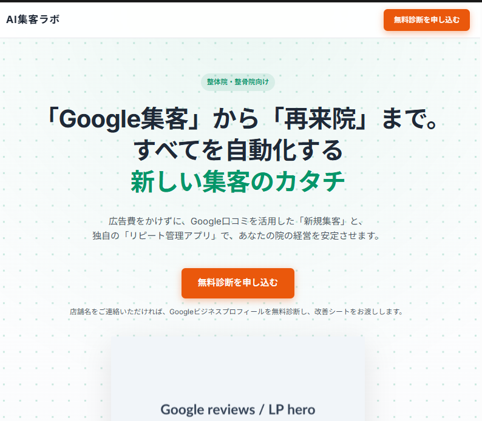

「Google集客」から「再来院」まで。
すべてを自動化する
新しい集客のカタチ
広告費をかけずに、Google口コミを活用した「新規集客」と、
独自の「リピート管理アプリ」で、あなたの院の経営を安定させます。
店舗名をご連絡いただければ、Googleビジネスプロフィールを無料診断し、改善シートをお渡しします。

こんなお悩みはありませんか？
新規集客が不安定
広告費ばかりがかさみ、毎月の新規予約数が安定しない。
リピート率が低い
初診は来るが、2回目、3回目の来院に繋がらない患者が多い。
ITツールが苦手
複雑なカルテシステムや予約システムを使いこなす自信がない。
整体院ビジネスの「真の売上構造」
単発の集客ではなく、自動で利益が積み上がる「好循環」を作ります。
地域No.1へ
施術体験
自動リピート
投稿戦略
集客 ✕ リピート ＝ 安定経営の仕組み
なぜ再来院に繋がらないのか？
原因は「技術力」ではなく、患者様との「接点」の欠如にあります。
よくある「離脱の原因」
「痛みが引けば」通院をやめてしまう
「次回いつ来るべきか」伝わっていない
離脱しそうな患者を「見える化」できていない
現代の患者の意思決定プロセス
Googleで「地域名 + 整体」を検索
口コミの数と評価を見て来院を決定
初回の施術を体験
適切なフォローがなければ、8割が自然離脱
解決策：集客とリピートの両輪を回す
AI集客ラボは、Google口コミによる「集客」と、アプリによる「リピート管理」をセットで提供。利益が最大化する基盤を構築します。
自動集客の仕組み化
広告費に頼らず、「地域名 + 整体」で検索された際、あなたの院を一番に選んでもらうための環境を整えます。
- Googleプロフィールの徹底最適化
- 4,400万回閲覧の実績に基づく投稿戦略
- 思わず来院したくなる口コミ獲得導線
再来院の仕組み化
来院した患者を二度と離さない。ITが苦手な方でも直感的に操作できる専用アプリで、フォローを自動化します。
- 離脱予備軍の自動見える化機能
- ワンタップで繋がるLINE・電話導線
- 当日・明日の予約状況を一目で把握
「カルテ」ではなく「再来院管理」
整体院リピート管理アプリ
多機能である必要はありません。再来院を増やすために必要な機能だけを、究極にシンプルにまとめました。
患者管理 & 来院履歴
カルテの代わりに全患者のステータスと来院履歴を一元管理できます。
当日・次回の予定
ダッシュボードで今日誰が来院し、誰が予約しているのか瞬時に把握。
離脱予備軍の抽出
来院間隔が空いている患者をAIが自動抽出し、アプローチ忘れを防ぎます。
ワンタップ連絡
リストから1タップでLINEや電話のアプリが起動. フォローにかかる時間を最小化。
✨ 現場で使いやすい画面設計
シンプルで導入しやすい料金体系
院のフェーズや目標に合わせて選べる2つのプランをご用意しました。
リピート管理アプリ単体
- 患者管理・来院履歴
- 本日の予約状況の確認
- 離脱予備軍の自動リストアップ
- ワンタップ電話＆LINE送信
- 操作マニュアル完備
Google集客フルサポート
- リピート管理アプリの全機能
- Googleプロフィール徹底改善
- 4,400万回閲覧の実績による投稿代行
- 口コミ獲得の導線設計アドバイス
- 再来院率向上の個別コンサル
※金額はすべて税抜き表示です。院の規模に応じて個別にお見積りいたします。
導入までの3ステップ
まずは無料診断から。あなたの院の現状を可視化することからスタートします。
無料診断のお申し込み
店舗名を公式LINEまたはフォームよりご連絡ください。専門スタッフが現状を確認します。
改善シートのご提示
Googleビジネスプロフィールの診断結果と、具体的な改善ポイントをまとめたシートをお送りします。
ご提案・運用スタート
診断結果に基づき、最適なプランをご提案。システムの導入から運用まで伴走サポートいたします。
まずは無料で、
あなたの院の「集客力」を診断しませんか？
店舗名をご連絡いただくだけで、専門家があなたの
Googleビジネスプロフィールを無料で診断し、独自の改善シートをお渡しします。
※デモのため、このボタンからの申し込み・メール送信は行われません。
強引な営業は一切行いません。お気軽にご相談ください。